TP Estadística Computacional
05/04/21
1 TP Estadística Computacional
Este post pretende presentar y desarrollar de manera breve y puntual cuestiones que responden al trabajo práctico de Estadística Computacional del posgrado en Big Data e Inteligencia Geoespacial de FLACSO Argentina (2020). Parte del trabajo se pensó en conjunto con Facundo Benitez Piloni.
2 Números Primos
Por definición, los número primos son aquellos números naturales (enteros, y mayores a 1) que solo son divisibles de manera exacta por dos número naturales: por 1 y por ellos mismos.
Dicho esto, podemos escribir el siguiente algoritmo para encontrar un número primo ubicado en una posición “n”.
numero_primo_n <- function(n)
{
#como sabemos, los números primos son mayores que 1 (por ende positivos), enteros y solo divisibles por 1 y por si mismos.
#entonces, si el número es menor o igual a 0 configuramos para que el algoritmo nos muestre un mensaje de error
if(n<=0)
{
return("Error, solo se aceptan números enteros y mayores a 1")
}
#el primer número primo, por definición arbitraria es el 2 (dos). entonces:
else if(n==1)
{
return("El número primo número 1 es: 2")
#el número primo ubicado en la posición 1 siempre va a ser el 2 (dos)
}
else{
#si el número primo que buscamos no se ubica en una posición negativa, ni neutral y es mayor a 1 (uno), el algoritmo nos va a responder que el número que buscamos, en la posición "n" es: (número primo ubicado en la posición "n")
print(paste("El número primo número",n, "es:"))
#vamos a crear un vector para guardar los números entre los que vamos a buscar los números primos ubicados en la posición n
disc = c()
vec = c()
#debemos establecer el limite superior, es decir el número hasta el que el algoritmo va a buscar números primos.
# como el número primo 1000 es 7919, vamos a poner como límite 10000 para tener margen de buscar números primos en posiciones mayores pero sin tener un costo computacional demasiado alto sin sentido
for(num in seq(3,10000))
{
#definimos qué números son primos y qué otros no lo son
#hay que recordar que nuestro algoritmo va a buscar número mayores a 1, entonces:
disc[num-2]= FALSE
#paras i en la secuencia desde 2 a num-1:
for(i in seq(2,num-1))
{
if((num%%i)==0)
{
disc[num-2]=TRUE
break
}
}
#los números primos van a ser almacenados en el vector "vec", cuando no son primos el valor que almacenamos es 0
if(disc[num-2]==FALSE)
{
vec[num-2]=num
}
else{vec[num-2]=0}
}
}
#creamos un vector nuevo en el que almacenamos los números primos (sin los ceros mencionados arriba que correspondían a números no primos) de manera ordenada de acuerdo a su posición
#y hacemos que devuelva el resultado
vector_primos <- c()
count=1
for(k in 1:length(vec))
{
if((vec[k])!=0)
{
vector_primos[count] <- vec[k]
count = count+1
}
}
return(vector_primos[n-1])
}Ahora, como la consigna del trabajo práctico pide averiguar el número primo ubicado en la posición número 1000, lo que debemos hacer es usar la función que creamos para encontrar números primos y pedirle que busque el número ubicado en la posición 1000:
## [1] "El número primo número 1000 es:"## [1] 7919En caso de que necesitemos buscar otro número primo ubicado en la posición “n”, debemos ejecutar la función numero_primo_numero(n). La limitación de esta función es que busca número primos en el rango 2-10000 y si buscamos un número ubicado en una posición demasiado alta quizás debamos modificarlo.
3 Probabilidad
El apartado de probabilidad consiste en averiguar cual es la probabilidad de obtener una generala para cinco dados al cabo de 3 intentos. En cada intento se tiran 5 dados, y cada uno de esos dados tiene 6 caras. Entonces, la probabilidad de que en un intento salgan 5 número iguales se calcula de la siguiente manera:
probabilidad = 1*(1/6)*(1/6)*(1/6)*(1/6)
#usamos la función round para especificar 5 decimales
probabilidad <- round(probabilidad, digits = 5)
#usamos print para que nos devuelva el resultado de probabilidad con algo de texto
print(paste("La probabilidad de obtener una generala es:", probabilidad))## [1] "La probabilidad de obtener una generala es: 0.00077"¿Cómo se calculó la probabilidad de un lanzamiento?
Ya que el primer dado puede tomar cualquier valor, la probabilidad es 1. Ahora, en los otros 4 dados, la probabilidad de que sean igual al primero es de 1/6, por lo que la probabilidad es 1 por 1/6, por 1/6, por 1/6, por 1/6, por 1/6.
Si queremos conocer la probabilidad en porcentaje:
probabilidad_porcentual = probabilidad*100
#usamos la función round para especificar 3 decimales
probabilidad <- round(probabilidad, digits = 3)
#usamos print para que nos devuelva el resultado de probabilidad con algo de texto
print(paste("El porcentaje de probabilidad de obtener una generala es:", probabilidad_porcentual))## [1] "El porcentaje de probabilidad de obtener una generala es: 0.077"4 Regresiones
El apartado de regresiones tiene como objetivo usar una regresión lineal para explicar la variable Pts (puntos) a partir de las variables Pts_2012_13, Pts_2013_14, Pts_2014, inversion_abs (inversión absoluta), inversion_relativa (inversión relativa), valor (valor en millones de euros), libertadores (si participó en el 2015 en la Copa Libertadores), sudamericana (si participó en el 2015 en la Copa Sudamericana) y ascenso (si ascendió).
Ahora, empecemos con los datos:
#cargamos el .csv
datos_generales <- read.csv2("datos_2015.csv",
sep = ";",
encoding = "UTF-8")
#usamos str para ver con qué variables (y de qué tipo) nos encontramos
str(datos_generales)## 'data.frame': 30 obs. of 49 variables:
## $ club : chr "Quilmes" "Olimpo" "Banfield" "Godoy Cruz" ...
## $ Pts_2012_13 : int 50 0 0 0 0 49 0 43 59 74 ...
## $ Pts_2013_14 : int 45 50 0 0 54 56 57 49 49 56 ...
## $ Pts_2014 : int 12 19 20 20 21 21 24 25 25 25 ...
## $ inversion_abs : chr "6.33" "2.25" "7.55" "3.4" ...
## $ inversion_relativa: chr "0.650965567" "0.25489225" "0.590507433" "0.301022445" ...
## $ valor : chr "13.23" "10" "16.93" "13.08" ...
## $ libertadores : int 0 0 0 0 0 0 0 0 1 0 ...
## $ sudamericana : int 0 0 0 0 0 0 0 0 0 0 ...
## $ ascenso : int 0 0 0 0 0 0 0 0 0 1 ...
## $ Pos : int 11 18 8 22 3 21 12 29 7 15 ...
## $ Pts : int 45 36 50 32 59 32 44 23 51 40 ...
## $ PJ : int 30 30 30 30 30 30 30 30 30 30 ...
## $ PG : int 13 8 14 8 16 8 12 4 14 11 ...
## $ PE : int 6 12 8 8 11 8 8 11 9 7 ...
## $ PP : int 11 10 8 14 3 14 10 15 7 12 ...
## $ GF : int 38 23 38 32 47 27 41 29 34 37 ...
## $ GC : int 37 26 32 40 26 31 38 51 28 40 ...
## $ Dif : int 1 -3 6 -8 21 -4 3 -22 6 -3 ...
## $ Pos_Fecha_1 : int 19 25 19 14 8 8 19 27 8 27 ...
## $ Pos_Fecha_2 : int 18 25 12 18 4 14 20 30 4 29 ...
## $ Pos_Fecha_3 : int 24 29 12 14 3 18 27 30 2 27 ...
## $ Pos_Fecha_4 : int 23 29 18 8 1 15 25 30 4 25 ...
## $ Pos_Fecha_5 : int 19 29 13 16 1 18 20 30 5 21 ...
## $ Pos_Fecha_6 : int 20 25 9 19 1 18 24 30 11 21 ...
## $ Pos_Fecha_7 : int 22 26 5 18 3 17 25 30 14 21 ...
## $ Pos_Fecha_8 : int 20 27 6 21 4 19 25 28 15 17 ...
## $ Pos_Fecha_9 : int 22 28 7 23 4 18 19 29 16 20 ...
## $ Pos_Fecha_10 : int 23 30 9 24 4 21 18 29 20 11 ...
## $ Pos_Fecha_11 : int 21 28 10 22 5 24 17 26 18 8 ...
## $ Pos_Fecha_12 : int 20 25 9 21 3 24 18 26 17 11 ...
## $ Pos_Fecha_13 : int 23 25 10 19 3 24 15 28 13 9 ...
## $ Pos_Fecha_14 : int 23 26 10 22 5 25 13 28 15 11 ...
## $ Pos_Fecha_15 : int 23 28 12 22 5 27 8 26 10 14 ...
## $ Pos_Fecha_16 : int 23 28 10 18 4 26 8 27 12 15 ...
## $ Pos_Fecha_17 : int 23 26 14 19 6 24 7 28 11 16 ...
## $ Pos_Fecha_18 : int 21 26 13 17 4 22 7 28 12 16 ...
## $ Pos_Fecha_19 : int 18 22 12 19 4 24 8 27 11 17 ...
## $ Pos_Fecha_20 : int 15 22 9 19 6 25 8 27 11 18 ...
## $ Pos_Fecha_21 : int 15 24 9 21 4 22 8 27 11 18 ...
## $ Pos_Fecha_22 : int 15 22 8 23 3 24 9 27 10 17 ...
## $ Pos_Fecha_23 : int 14 23 9 25 3 21 12 27 8 19 ...
## $ Pos_Fecha_24 : int 13 21 7 23 3 19 12 27 10 18 ...
## $ Pos_Fecha_25 : int 13 22 6 25 3 20 12 27 8 17 ...
## $ Pos_Fecha_26 : int 11 20 8 25 3 22 14 28 10 18 ...
## $ Pos_Fecha_27 : int 11 20 9 23 3 19 14 28 8 16 ...
## $ Pos_Fecha_28 : int 11 18 10 21 2 20 12 29 6 16 ...
## $ Pos_Fecha_29 : int 11 17 9 22 3 20 12 29 8 15 ...
## $ Pos_Fecha_30 : int 11 18 8 22 3 21 12 29 7 15 ...Como en el dataset original hay 49 variables y las mencionadas en la consigna (y necesarias para este ejercicio) son 10, vamos a seleccionar variables.
#seleccionamos las variables necesarias
datos <- datos_generales %>%
select(Pts_2012_13:ascenso, Pts)
#repasamos para ver qué variables seleccionamos
str(datos) ## 'data.frame': 30 obs. of 10 variables:
## $ Pts_2012_13 : int 50 0 0 0 0 49 0 43 59 74 ...
## $ Pts_2013_14 : int 45 50 0 0 54 56 57 49 49 56 ...
## $ Pts_2014 : int 12 19 20 20 21 21 24 25 25 25 ...
## $ inversion_abs : chr "6.33" "2.25" "7.55" "3.4" ...
## $ inversion_relativa: chr "0.650965567" "0.25489225" "0.590507433" "0.301022445" ...
## $ valor : chr "13.23" "10" "16.93" "13.08" ...
## $ libertadores : int 0 0 0 0 0 0 0 0 1 0 ...
## $ sudamericana : int 0 0 0 0 0 0 0 0 0 0 ...
## $ ascenso : int 0 0 0 0 0 0 0 0 0 1 ...
## $ Pts : int 45 36 50 32 59 32 44 23 51 40 ...Antes de poder trabajar con las regresiones, necesitamos cambiar algunos tipos de variables a numéricas y otras a lógicas:
#tomamos las variables ubicadas en las columnas 1-6 y 10 y las transformamos en numéricas
datos[,1:6] <- sapply(datos[,1:6],as.numeric)
#tomamos las variables ubicadas en la columna 10 y la transformamos en numérica
datos[,10] <- sapply(datos[,10],as.numeric)
#tomamos las variables ubicadas en las columnas 7-9 y las transformamos en numéricas
datos[,7:9] <- sapply(datos[,7:9],as.logical)
#repasamos para ver qué variables seleccionamos
str(datos) ## 'data.frame': 30 obs. of 10 variables:
## $ Pts_2012_13 : num 50 0 0 0 0 49 0 43 59 74 ...
## $ Pts_2013_14 : num 45 50 0 0 54 56 57 49 49 56 ...
## $ Pts_2014 : num 12 19 20 20 21 21 24 25 25 25 ...
## $ inversion_abs : num 6.33 2.25 7.55 3.4 10.83 ...
## $ inversion_relativa: num 0.651 0.255 0.591 0.301 1.088 ...
## $ valor : num 13.2 10 16.9 13.1 16.3 ...
## $ libertadores : logi FALSE FALSE FALSE FALSE FALSE FALSE ...
## $ sudamericana : logi FALSE FALSE FALSE FALSE FALSE FALSE ...
## $ ascenso : logi FALSE FALSE FALSE FALSE FALSE FALSE ...
## $ Pts : num 45 36 50 32 59 32 44 23 51 40 ...4.1 Regresión Lineal Simple
En estadística, la regresión lineal es un modelo matemático usado para aproximar la relación de dependencia entre una variable dependiente y con la variable independiente x. Se puede representar con la fórmula:
y = a + b x*
A cada punto en x le corresponde un valor en y. El valor de y es resultado de multiplicar x por la pendiente b, y de sumar la ordenada al origen a. Se le llama “ordenada al origen” o “intersección” ya que es el valor donde la recta intersecta con el eje y cuando x vale 0.
En una regresión lineal, el “modelo” que creamos es una línea que minimiza la distancia al cuadrado de todos los puntos, lo que nos permite conocer cuánto varía la variable dependiente y por cada cambio de unidad en la variable independiente x y también predecir o estimar valores.
Vamos a recordar los supuestos del modelo de regresión lineal: * Linealidad * Independencia * Normalidad * Homocedasticidad
En este dataset la variable dependiente y es la variable Pts, que representa la cantidad de puntos alcanzados por los distintos clubes que compitieron en la primera división del fútbol argentino durante el campeonato 2015.
Vamos a ver esto en un histograma:
hist(datos$Pts, main = "Histograma: puntos obtenidos en el torneo 2015",
xlab = "Puntos", ylab = "Frecuencia")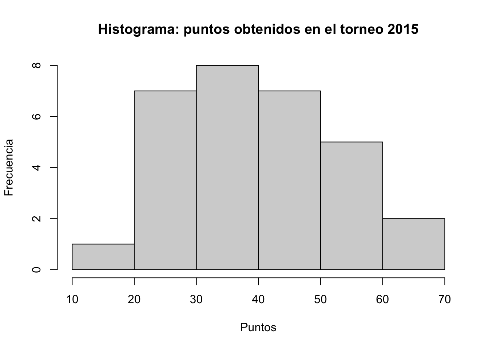
La distribución de puntos obtenidos por los equipos en el torneo 2015 va desde los 14 hasta los 64.
4.1.1 Correlaciones
Vamos a averiguar el grado de correlación entre las variables. Antes, vamos a recordar el criterio de evaluación del grado de correlación:
- de 0.7 a 1: fuerte a total
- de 0.5 a 0.7: moderada a fuerte
- de 0.3 a 0.5: débil a moderada
- menor a 0.3: nula a débil
Ahora, vamos a calcular la correlación de nuestra variable dependiente y (Pts) con el resto de las variables.
4.1.2 Regresión: puntos 2014 y 2015
Vamos a calcular una regresión con la variable dependiente Pts y la independiente Pts_2014. Antes, vamos a ver nuestros datos en un gráfico de puntos:
ggplot(datos) +
geom_point(aes(x = Pts_2014, y = Pts)) +
labs(title = 'Puntos en 2014 y 2015') +
theme_minimal()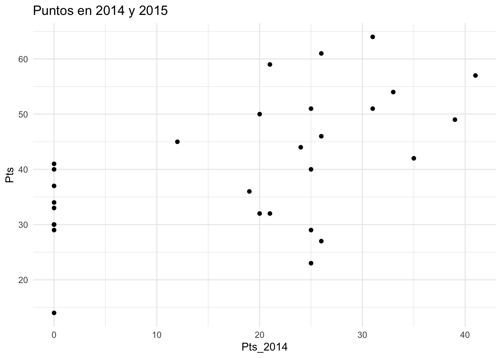
Ahora calculamos la regresión:
##
## Call:
## lm(formula = Pts ~ Pts_2014, data = datos)
##
## Coefficients:
## (Intercept) Pts_2014
## 31.5541 0.5017Y vemos las estadísticas de resumen:
##
## Call:
## lm(formula = Pts ~ Pts_2014, data = datos)
##
## Residuals:
## Min 1Q Median 3Q Max
## -21.0959 -4.8383 0.9041 6.6508 16.9108
##
## Coefficients:
## Estimate Std. Error t value Pr(>|t|)
## (Intercept) 31.5541 3.0209 10.45 3.65e-11 ***
## Pts_2014 0.5017 0.1363 3.68 0.000985 ***
## ---
## Signif. codes: 0 '***' 0.001 '**' 0.01 '*' 0.05 '.' 0.1 ' ' 1
##
## Residual standard error: 10.15 on 28 degrees of freedom
## Multiple R-squared: 0.326, Adjusted R-squared: 0.3019
## F-statistic: 13.54 on 1 and 28 DF, p-value: 0.0009849Estimate nos devuelve el valor estimado de la ordenada al origen y la pendiente.
Nuestro modelo es significativo porque: * los coeficientes de regresión son 31.5541 y 0.5017. * el p-value (nivel de significación del estudio) es 0.0009849, lo que nos permite rechazar la hipótesis nula. En este caso, la H0 plantea que la variable no es estadísticamente significativa para predecir el valor, y en consecuencia nuestra variable tiene significancia.
El R cuadrado describe la proporción de variabilidad de la variable dependiente (y) del modelo y relativa a la variabilidad total. Mide el nivel de ajuste e indica qué porcentaje de la variabilidad de y es explicado por x.
En la regresión lineal entre Pts_2014 y Pts, el valor de R cuadrado es 0.3019. ¿Qué significa esto? Que el 30.2% de la variabilidad de los puntos de 2015 (la variable Pts) se explica por los puntos de 2014 (Pts_2014). El resto de la variabilidad se debe al azar o a otras variables no incluidas en este modelo.
Vamos a ver el gráfico de puntos anterior pero ahora con la recta de regresión:
ggplot(datos) +
geom_point(aes(x = Pts_2014, y = Pts)) +
labs(title = 'Regresión: puntos 2014 y 2015') +
geom_abline(aes(intercept = 31.5541, slope = 0.5017), color = 'red') +
xlim(c(0,50)) +
ylim(0,70) +
theme_minimal()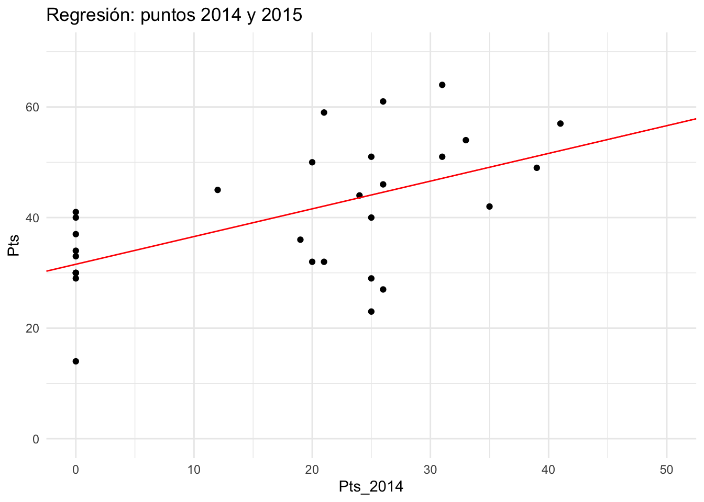
El gráfico muestra una correlación positiva entre las variables Pts y Pts_2014. Hay equipos que no tuvieron puntos en un torneo y sí en otro, y esto se debe a que no han competido. Algunos equipos que no participaron en 2014 obtuvieron entre 20 y 40 en 2015 mientras que gran parte de los equipos que alcanzaron entre 20 y 40 puntos en 2014 tuvieron un desempeño similar (a veces incluso mejor) en 2015.
Es importante destacar que el modelo tiene cierto ruido, y que los puntos suelen tomar valores distanciados de la recta de regresión por lo que no está ajustado de manera ideal.
4.1.3 Regresión: puntos 2015 e inversión absoluta
Vamos a trabajar con una regresión lineal simple entre la variable Pts e inversion_abs. En esta y en la próxima regresión vamos a ir directo a los modelos y a los gráficos con sus rectas de regresión.
Vamos a calcular la regresión lineal:
##
## Call:
## lm(formula = Pts ~ inversion_abs, data = datos)
##
## Coefficients:
## (Intercept) inversion_abs
## 36.142 1.744Vemos las estadísticas de resumen:
##
## Call:
## lm(formula = Pts ~ inversion_abs, data = datos)
##
## Residuals:
## Min 1Q Median 3Q Max
## -22.142 -7.132 -2.467 4.501 25.915
##
## Coefficients:
## Estimate Std. Error t value Pr(>|t|)
## (Intercept) 36.1424 2.2854 15.815 1.73e-15 ***
## inversion_abs 1.7440 0.5228 3.336 0.00241 **
## ---
## Signif. codes: 0 '***' 0.001 '**' 0.01 '*' 0.05 '.' 0.1 ' ' 1
##
## Residual standard error: 10.46 on 28 degrees of freedom
## Multiple R-squared: 0.2844, Adjusted R-squared: 0.2589
## F-statistic: 11.13 on 1 and 28 DF, p-value: 0.002407Existe relación positiva entre las variables Pts e inversion_abs, y el modelo es significativo porque: * el p-value es 0.002407, por lo que podemos aceptarlo ya que como explicamos arriba rechaza la hipótesis nula. * el R cuadrado es de 0.2589, lo que significa que el 25.9% de la variabilidad de los puntos de 2015 (Pts) se explica por la inversión (inversión_abs). El resto de la variabilidad se debe al azar o a otras variables no incluidas en este modelo.
Vamos a ver el gráfico de puntos anterior pero ahora con la recta de regresión:
ggplot(datos) +
geom_point(aes(x = inversion_abs, y = Pts)) +
labs(title = 'Regresión: puntos 2015 e inversión absoluta') +
geom_abline(aes(intercept = 36.1424, slope = 1.744), color = 'red') +
xlim(c(-4,12)) +
ylim(0,70) +
theme_minimal()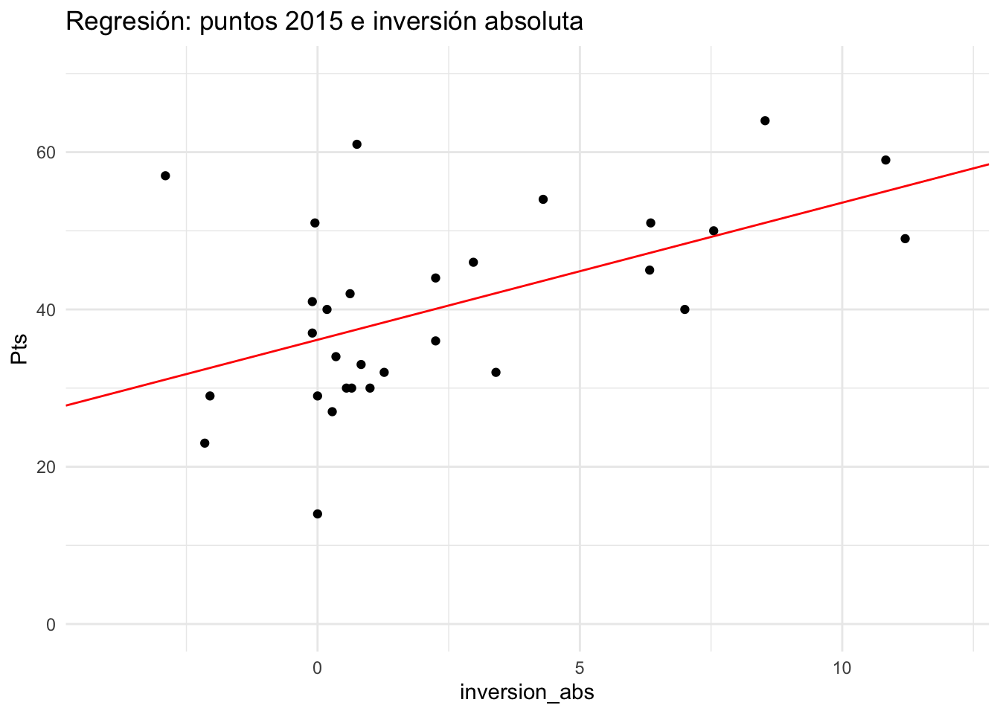
Del gráfico podemos concluir que los clubes cuya inversión absoluta fue mayor a cero y de hasta 1,75 millones alcanzaron puntajes ubicados entre los 25 los 40 puntos aproximadamente. Hay dos excepciones, que podrían ser catalogadas como outliers: una con menos de 20 puntos y otra que supera los 60 puntos.
Por otro lado, todos los equipos cuya inversión absoluta supera los 2 millones de dolares alcanzaron un puntaje mayor a 30 puntos. Tal como en el caso anterior, el modelo no se ajusta de manera deseable.
4.1.4 Regresión: puntos 2015 y valor
La última regresión lineal implica las variables Pts y valor. Calculamos la regresión:
##
## Call:
## lm(formula = Pts ~ valor, data = datos)
##
## Coefficients:
## (Intercept) valor
## 29.6578 0.7111Ahora vamos a ver las estadísticas de resumen:
##
## Call:
## lm(formula = Pts ~ valor, data = datos)
##
## Residuals:
## Min 1Q Median 3Q Max
## -18.8081 -6.8428 -0.7274 6.7124 17.7294
##
## Coefficients:
## Estimate Std. Error t value Pr(>|t|)
## (Intercept) 29.6578 3.1246 9.492 3.01e-10 ***
## valor 0.7111 0.1713 4.152 0.000279 ***
## ---
## Signif. codes: 0 '***' 0.001 '**' 0.01 '*' 0.05 '.' 0.1 ' ' 1
##
## Residual standard error: 9.725 on 28 degrees of freedom
## Multiple R-squared: 0.3811, Adjusted R-squared: 0.359
## F-statistic: 17.24 on 1 and 28 DF, p-value: 0.0002791Como se pudo ver al momento de calcular la correlación, la correlación entre estas variables fue la más alta con un valor de 0,61.
Existe relación positiva entre las variables Pts y valor, y el modelo es significativo porque: * el p-value es 0.0002791, por lo que podemos aceptarlo. * el R cuadrado es de 0.359, lo que significa que el 35.9% de la variabilidad de los puntos de 2015 (Pts) se explica por el valor en millones de euros (valor). El resto de la variabilidad se debe al azar o a otras variables no incluidas en este modelo.
Graficamos:
ggplot(datos) +
geom_point(aes(x = valor, y = Pts)) +
labs(title = 'Regresión: puntos 2015 y valor') +
geom_abline(aes(intercept = 29.6578 , slope= 0.7111), color = 'red') +
xlim(c(0,45)) +
ylim(0,70) +
theme_minimal()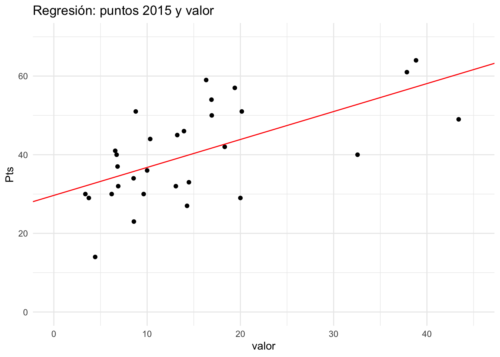
## Min. 1st Qu. Median Mean 3rd Qu. Max.
## 3.380 7.312 13.155 15.012 17.973 43.400## Min. 1st Qu. Median Mean 3rd Qu. Max.
## 14.00 30.50 40.00 40.33 49.75 64.00La variable valor (en millones de euros) toma valores en un rango de entre 14 y 64 puntos (Pts).
4.2 Residuos RL
Los residuos son las diferencias encontradas entre el valor que predice un modelo para una variable y el valor observado en la práctia. Representan el desvío de cada observación respecto al valor “esperado” por nuestro modelo.
Cuando los desvíos son pequeños (y en consecuencia los residuos lo son), decimos que el modelo se ajusta bien a los datos observados. Cuando los residuos son grandes ocurre lo contrario, y quizás deberíamos buscar otra forma de describir y/o modelar la relación entre las variables ya que este modelo no es óptimo.
Para calcular los residuos vamos a usar la función residuals() y para verificar si el modelo cumple los supuestos vamos a graficar con la función plot().
4.2.1 Residuos RL Pts_2014
## 1 2 3 4 5 6
## 7.4258474 -5.0858372 8.4124936 -9.5875064 16.9108244 -10.0891756
## 7 8 9 10 11 12
## 0.4058167 -21.0958525 6.9041475 -4.0958525 -15.0958525 -17.5975217
## 13 14 15 16 17 18
## 1.4024783 16.4024783 3.8941322 16.8941322 5.8907937 -7.1125447
## 19 20 21 22 23 24
## -2.1192216 4.8774399 9.4458781 8.4458781 5.4458781 2.4458781
## 25 26 27 28 29 30
## 1.4458781 -1.5541219 -1.5541219 -1.5541219 -2.5541219 -17.5541219Como podemos ver, la función residuals() nos devuelve el residuo para cada observación. Ahora vamos a graficar estos resultados:
ggplot()+
geom_point(aes(x=datos$Pts_2014, y=residuos_Pts_2014))+
geom_hline(yintercept = 0, col = 'red')+
labs(title="Residuos RL: Pts y Pts_2014",
y="residuos",
x="Puntos 2014") +
theme_minimal() 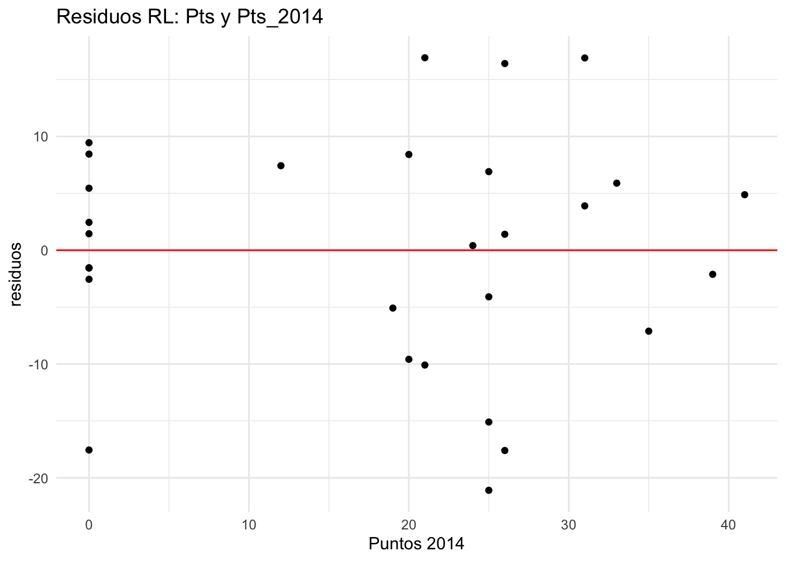
## Min. 1st Qu. Median Mean 3rd Qu. Max.
## -21.0959 -4.8383 0.9041 0.0000 6.6508 16.9108Del resumen de los residuos y la visualización podemos decir que hay cierto equilibrio entre los puntos ubicados debajo y encima del cero. Hay que destacar que también encontramos una distribución desigual de residuos a lo largo del eje x ya que varios residuos se concentran en 0. ¿Por qué pasa esto? Porque son equipos que no obtuvieron puntos en el torneo. La distribución parece normalizarse para el resto de los valores de x.
Ahora, vamos a ver otros gráficos que nos van a ayudar a entender mejor este tema:
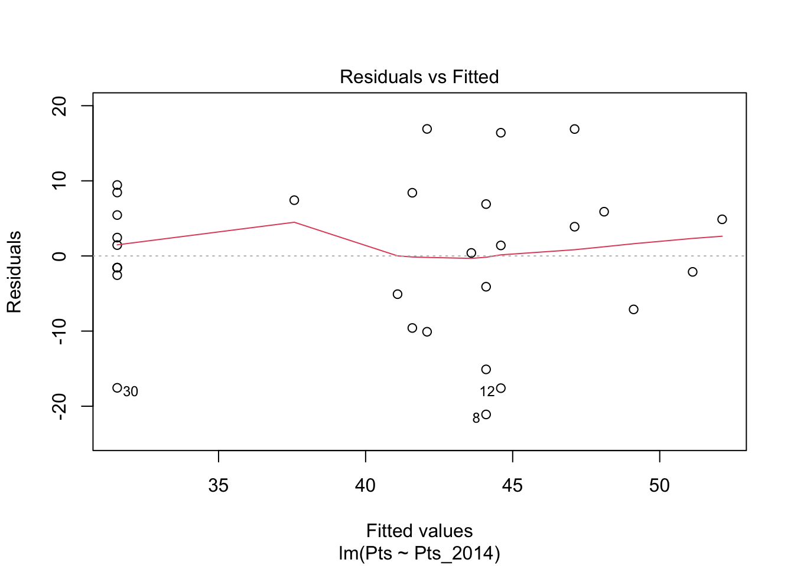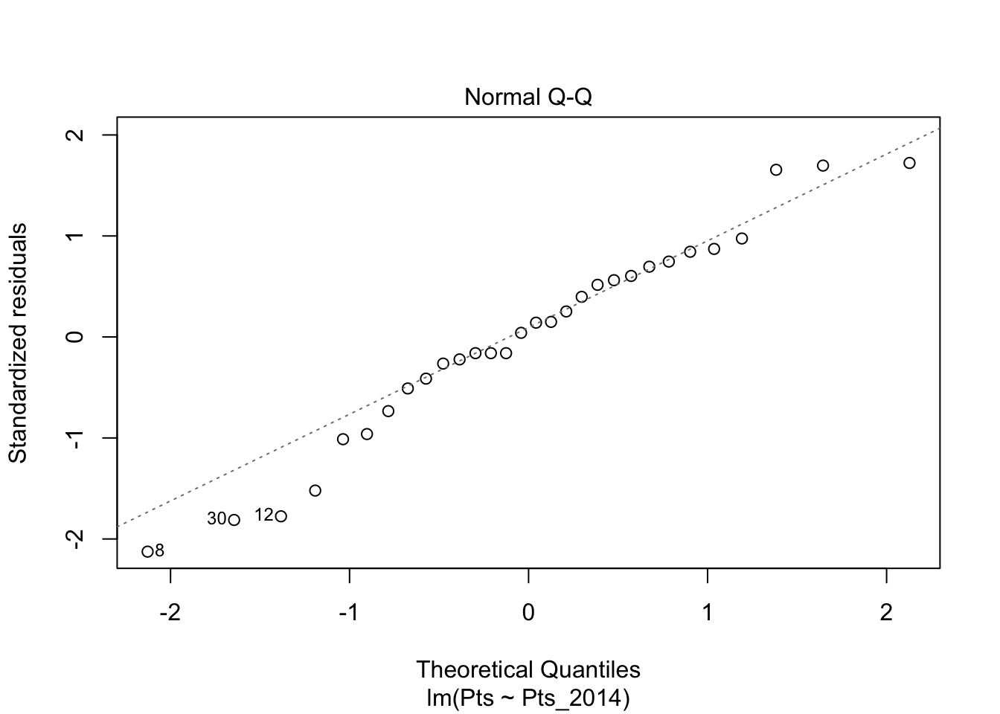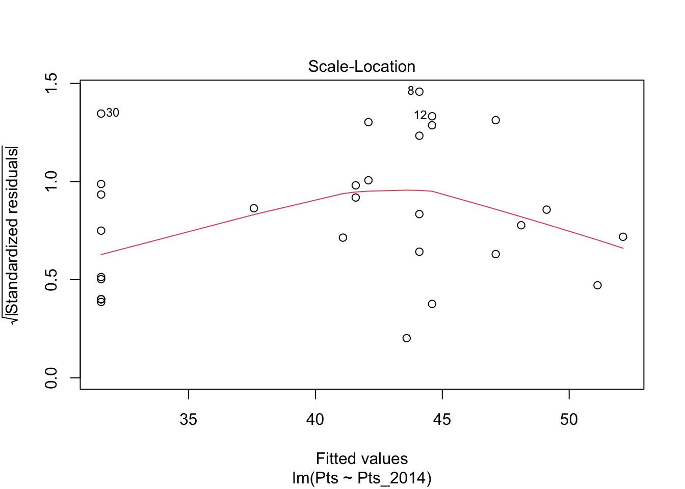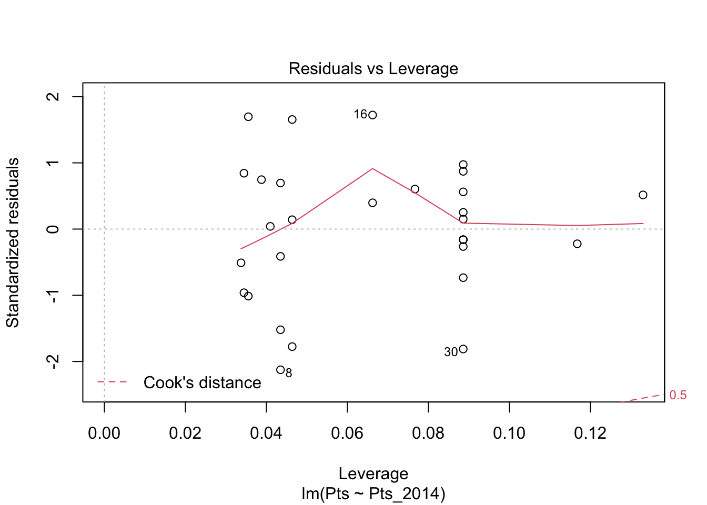
Residuals vs Fitted nos permite entender si las variables tienen una relación lineal y verificar la dispersión. Tal como se mencionó arriba, nos encontramos frente a una concentración de residuos cuando eje x toma el valor 0 (cero).
Q-Q Plot muestra la acumulación de residuos por quantiles, si la distribución es normal los residuos se encuentran cercanos a la recta y en casos contrarios la distribución no es normal. En este caso, la distribución tiende a ser normal, aunque con algunas desviaciones en los extremos. La única observación es que hay que prestar atención a las observaciones 12, 30 y 8 ya que podrían traernos problemas.
Scale-location nos permite comprobar la homocedasticidad del modelo utilizando los residuos de forma estandarizada.La distribución es homocedástica, ya que podemos observar la línea roja tiende a ser plana por lo que asumimos que la varianza en los residuos no cambia en función de x.
Residuals vs Leverage es clave en la detección de puntos con influencia en el cálculo de estimaciones de parámetros. Los puntos ubicados fuera de los límites de las líneas discontinuas deben ser analizados de manera individual para detectar anomalías. En este modelo no hay residuos que sobrepasen las lineas de distancia de Cook, es decir que no hay valores atípicos influyentes.
4.2.2 Residuos RL inversión_abs
Ahora, hacemos el análisis de los residuos de la regresión lineal simple con inversión absoluta.
## 1 2 3 4 5 6
## -2.1821682 -4.0664956 0.6901061 -10.0721386 3.9696634 -6.3573389
## 7 8 9 10 11 12
## 3.9335044 -9.3927310 3.7829510 3.5436618 -7.1424114 -9.6307419
## 13 14 15 16 17 18
## 4.6777975 23.5495605 14.9447904 12.9809495 10.3582277 4.7762854
## 19 20 21 22 23 24
## -6.6756304 25.9152971 5.0319923 -8.3506733 1.0319923 -2.7528245
## 25 26 27 28 29 30
## -4.5899625 -7.2760358 -7.8864488 -7.1016320 -3.5671347 -22.1424114ggplot() +
geom_point(aes(x = datos$inversion_abs, y = residuos_inversionabs)) +
geom_hline(yintercept = 0, col = 'red') +
labs(title="Residuos RL: Pts e inversion_abs",
y="residuos",
x="inversion_abs") +
theme_minimal() 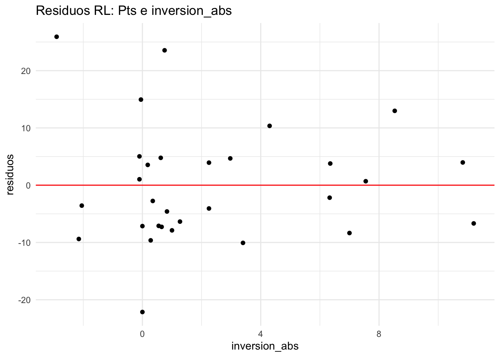
Como se puede observar, hay cierta aleatoriedad en la distribución de los residuos mientras que el promedios de los residuos se aproxima a cero. Sin embargo, como el caso anterior podemos encontrar una concentración de residuos entre 0 y 2 del eje x y la mayoría de los puntos toman valores de entre 10 y -10 en el eje y. Vemos otros gráficos para entender mejor:
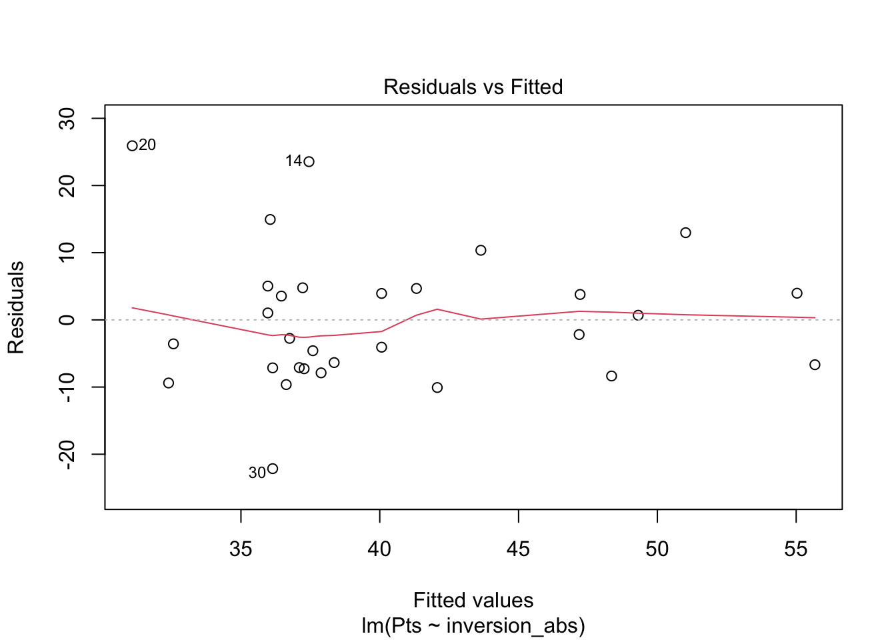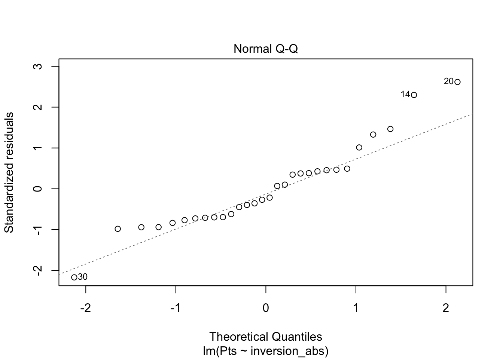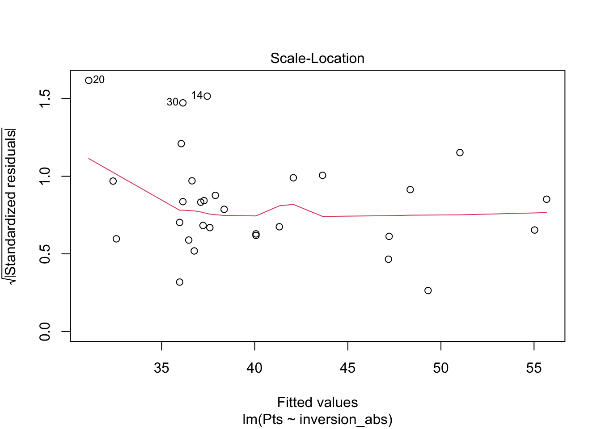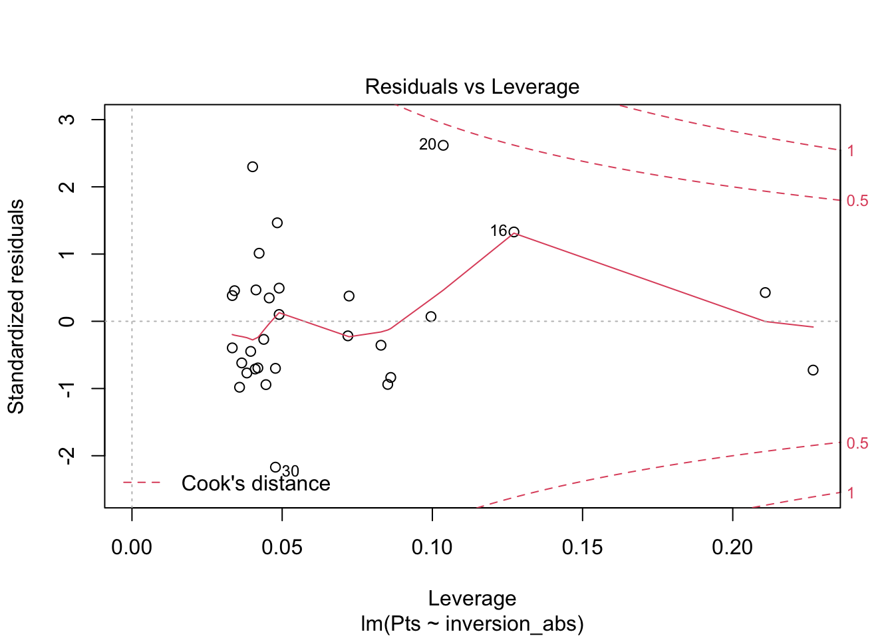
Residual vs Fitted confirma una dispersión aleatoria de los residuos. No nos encontramos frente a ningún patrón considerable. Scale-Location también confirma la distribución aleatoria de los residuos, lo que nos permite aceptar el supuesto de homocedasticidad.
Q-Q Plot muestra una distribución relativamente normal. Los valores 20 y 14 deberían ser considerados en casos futuros pero no son considerados valores extremos ni outliers por lo que podemos confirmar el supuesto de normalidad.
En Residuals vs Leverage el residuo 20 se encuentra cercano a la linea de Cook en el margen superior derecho. Aunque no pase las lineas, otra vez, esta podría ser una observación que impacte en el cálculo de estimación de parámetros.
4.2.3 Residuos RL valor
Ahora vamos a los residuos del modelo de regresión entre las variables Pts y valor.
## 1 2 3 4 5 6
## 5.9339080 -0.7691283 8.3027111 -6.9594219 17.7293917 -2.5646121
## 7 8 9 10 11 12
## 6.9961974 -12.7593176 7.0128587 5.5562808 -3.3245391 -12.8127830
## 13 14 15 16 17 18
## 6.4218913 4.4257820 15.0984555 6.7288704 12.3240451 -0.6857655
## 19 20 21 22 23 24
## -11.5210133 13.5462094 6.6629509 -12.8123177 2.4851673 -1.7379836
## 25 26 27 28 29 30
## -6.9550099 -6.5060086 -4.0668181 -2.0614194 -14.8804711 -18.8081104Graficamos:
ggplot() +
geom_point(aes(x = datos$valor, y = residuos_valor)) +
geom_hline(yintercept = 0, col = 'red') +
labs(title="Residuos RL: Pts y valor",
y="residuos",
x="valor") +
theme_minimal() 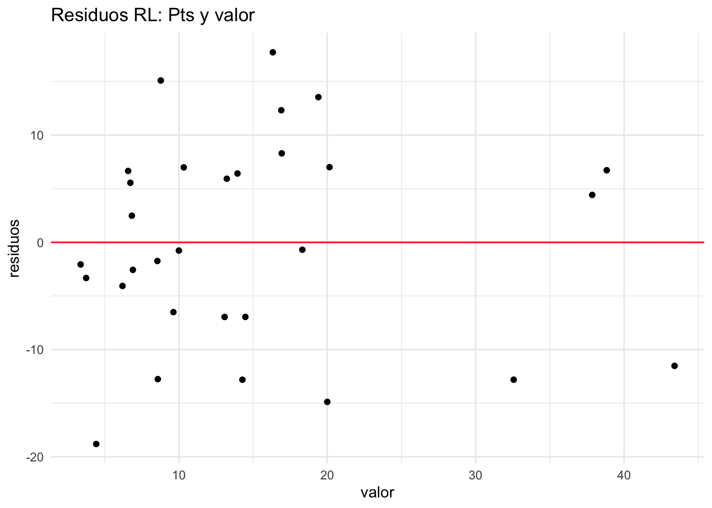
La distribución de puntos es similar tanto encima como debajo del 0 en el eje y. Gran parte de los puntos se concentran entre el 0 y el 20 en el eje x, por lo que la distribución no es pareja ya que unos pocos equipos tienen valores mayores a 30 millones de euros.
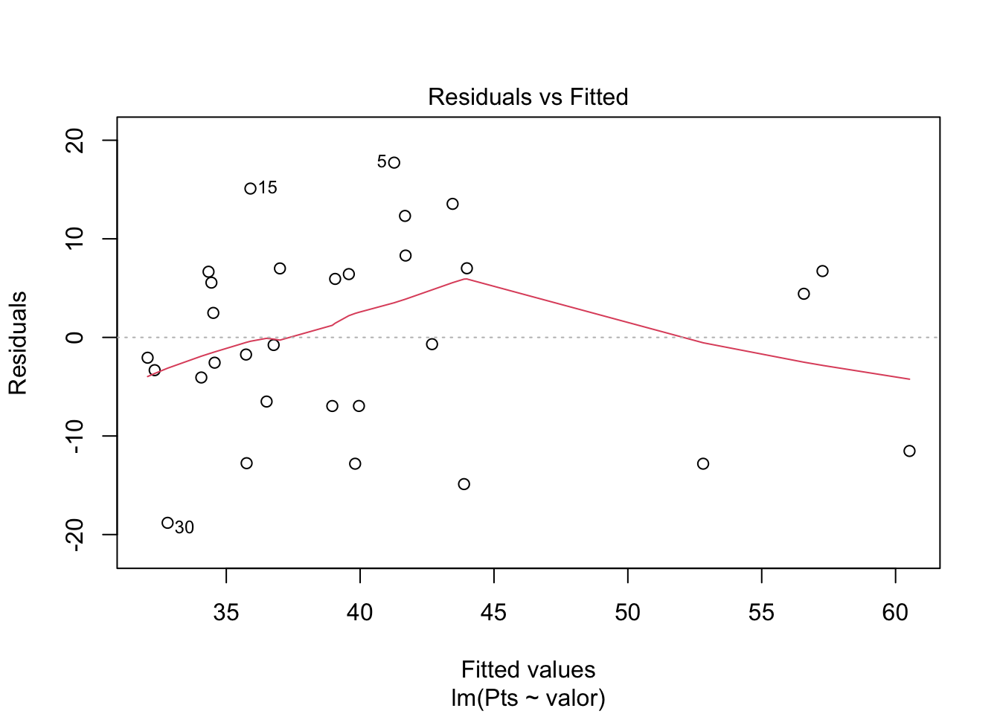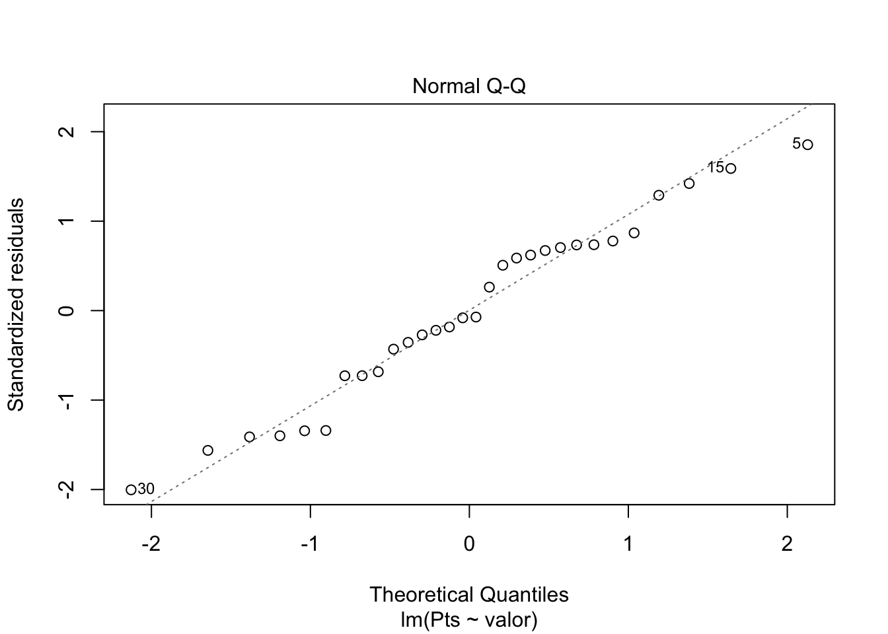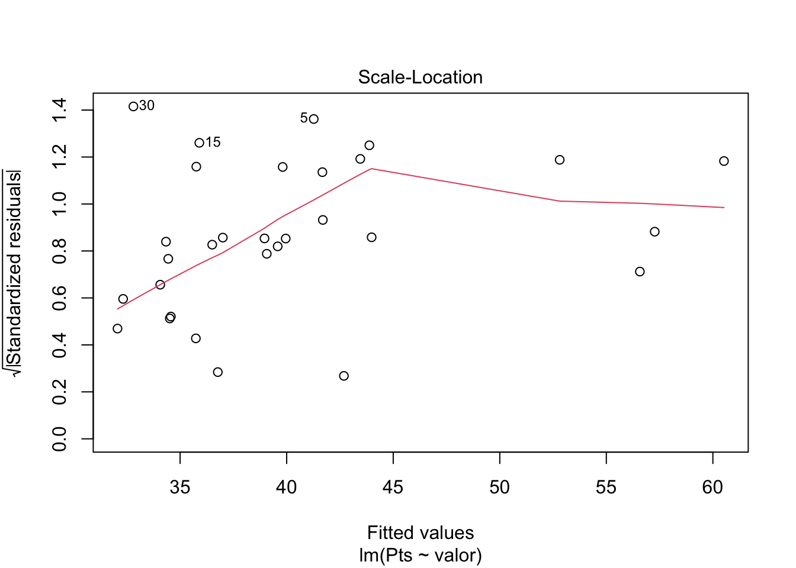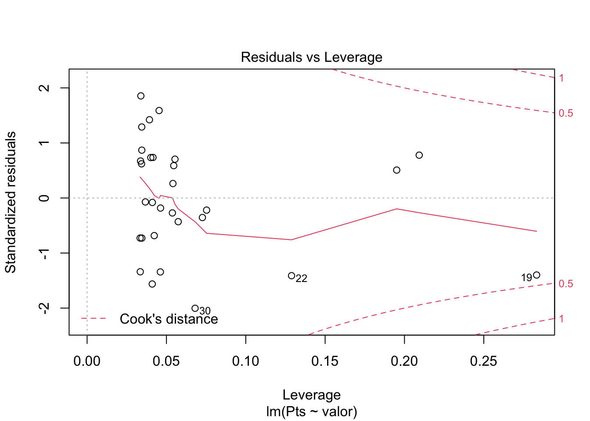
Residuals vs Fitted muestra una concentración de residuos en la primera parte del gráfico, al igual que Scale-Location donde también notamos un patrón de concentración de residuos.
Q-Q Plot muestra una distribución relativamente normal. El valor 5 debería ser considerado en casos futuros, pero no es considerado valor extremo ni outlier por lo que podemos confirmar el supuesto de normalidad.
Residuals vs Leverage nos permite observar que ningun residuo pasa las líneas de Cook, aunque el punto 19 se encuentra muy próximo y si bien esta dentro de lo esperable podría ser un valor atípico influyente.
Luego de los análisis de residuos realizados hasta el momento, podemos concluir en que los residuos tienen una distribución un tanto desigual con concentraciones particulares y valores en algunos casos moderados/extremos. Vamos a trabajar con regresión lineal múltiple para analizar el caso desde otras perspectivas.
4.3 RL Multiple
¿Por qué vamos a usar una regresión lineal múltiple? Ya que nos permite generar un modelo (lineal) en el que la variable dependiente y está determinada por un conjunto de variables independientes.
Vamos a calcular la regresión lineal múltiple con todas las variables independientes de que están disponibles en nuestro dataset y que se relacionan con la variavle Pts (puntos en el torneo 2015):
##
## Call:
## lm(formula = Pts ~ ., data = datos)
##
## Coefficients:
## (Intercept) Pts_2012_13 Pts_2013_14 Pts_2014
## 15.058086 -0.084927 0.008748 0.575616
## inversion_abs inversion_relativa valor libertadoresTRUE
## -2.173272 40.110542 0.834816 3.896544
## sudamericanaTRUE ascensoTRUE
## -1.348871 7.400458Ahora vemos las estadísticas de resumen y los coeficientes:
##
## Call:
## lm(formula = Pts ~ ., data = datos)
##
## Residuals:
## Min 1Q Median 3Q Max
## -12.1568 -3.9097 -0.2494 3.4886 15.7965
##
## Coefficients:
## Estimate Std. Error t value Pr(>|t|)
## (Intercept) 15.058086 7.459359 2.019 0.0571 .
## Pts_2012_13 -0.084927 0.103988 -0.817 0.4237
## Pts_2013_14 0.008748 0.106711 0.082 0.9355
## Pts_2014 0.575616 0.223596 2.574 0.0181 *
## inversion_abs -2.173272 1.268791 -1.713 0.1022
## inversion_relativa 40.110542 15.874772 2.527 0.0201 *
## valor 0.834816 0.338797 2.464 0.0229 *
## libertadoresTRUE 3.896544 5.391639 0.723 0.4782
## sudamericanaTRUE -1.348871 3.915157 -0.345 0.7340
## ascensoTRUE 7.400458 5.703893 1.297 0.2092
## ---
## Signif. codes: 0 '***' 0.001 '**' 0.01 '*' 0.05 '.' 0.1 ' ' 1
##
## Residual standard error: 7.973 on 20 degrees of freedom
## Multiple R-squared: 0.7028, Adjusted R-squared: 0.5691
## F-statistic: 5.256 on 9 and 20 DF, p-value: 0.0009804El p-value general del modelo es de 0.0009804, por lo que podemos considerarlo signficativo. El coeficiente de Adjusted R-squared es de 0.5691, mientras que el de Multiple R-squared es de 0.7028.
Las variables más significativas, con un p-value menor a 0.05, son Pts_2014, inversion_relativa y valor por lo que vamos a calcular una regresión multiple con estas variables.
##
## Call:
## lm(formula = Pts ~ Pts_2014 + inversion_relativa + valor, data = datos)
##
## Coefficients:
## (Intercept) Pts_2014 inversion_relativa valor
## 24.7700 0.3347 15.3771 0.4702##
## Call:
## lm(formula = Pts ~ Pts_2014 + inversion_relativa + valor, data = datos)
##
## Residuals:
## Min 1Q Median 3Q Max
## -13.8207 -3.7897 0.7116 4.2455 13.3679
##
## Coefficients:
## Estimate Std. Error t value Pr(>|t|)
## (Intercept) 24.7700 2.8622 8.654 3.93e-09 ***
## Pts_2014 0.3347 0.1165 2.873 0.00800 **
## inversion_relativa 15.3771 5.7650 2.667 0.01298 *
## valor 0.4702 0.1546 3.041 0.00533 **
## ---
## Signif. codes: 0 '***' 0.001 '**' 0.01 '*' 0.05 '.' 0.1 ' ' 1
##
## Residual standard error: 7.971 on 26 degrees of freedom
## Multiple R-squared: 0.6139, Adjusted R-squared: 0.5694
## F-statistic: 13.78 on 3 and 26 DF, p-value: 1.419e-05A diferencia de la regresión multiple anterior, el coeficiente Adjusted R-squared aumenta levemente de 0.5691 a 0.5694. Por otro lado, el Multiple R-squared desciende de 0.7028 a 0.6139. El p-value es menor a 0.05, por lo que podemos aceptar el modelo ya que es significativo.
Si tomamos el Adjusted R-squared, podemos decir que este segundo modelo explica el 56.9% de la variabilidad de la variable dependiente y, que este caso es la llamada Pts.
4.4 Residuos RLM
Vamos a enfocarnos en los residuos de la regresión lineal múltiple ajustada con tres variables. Graficamos:
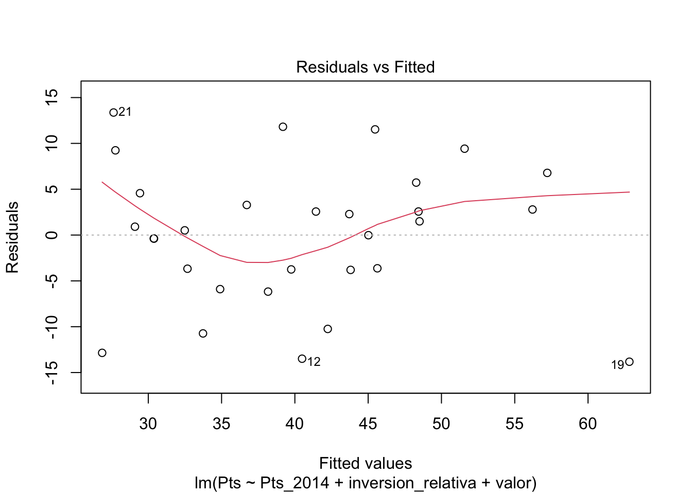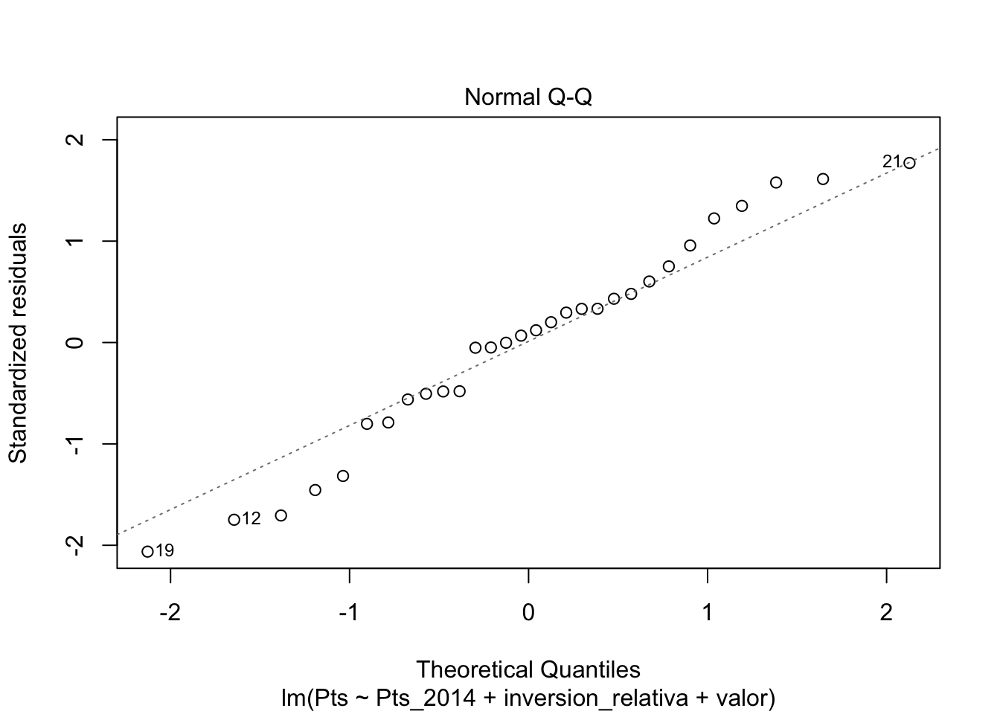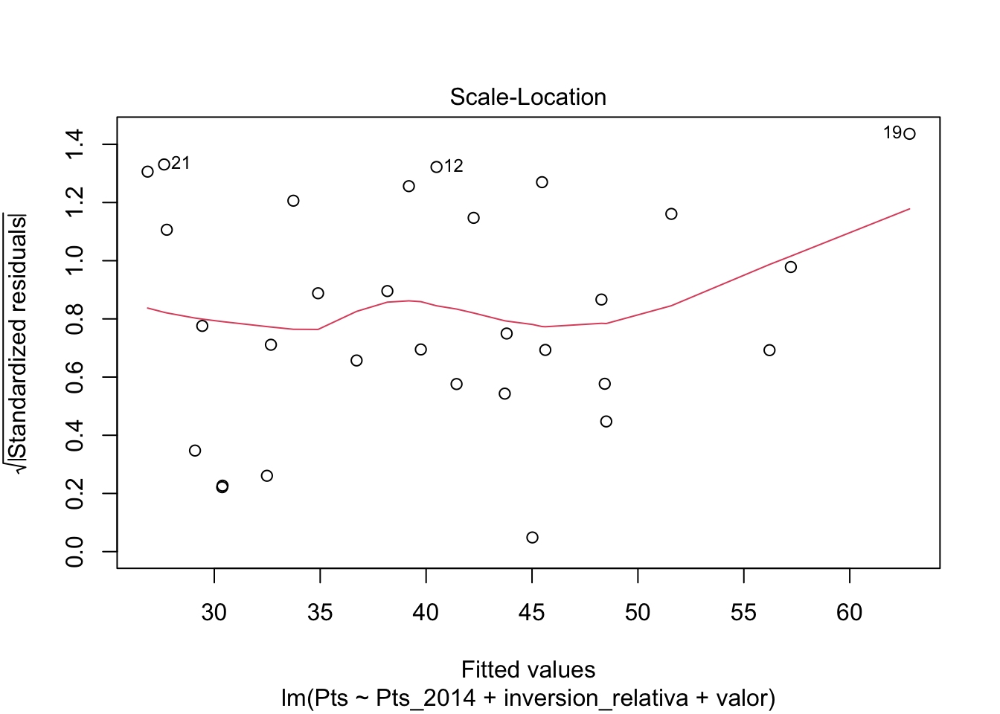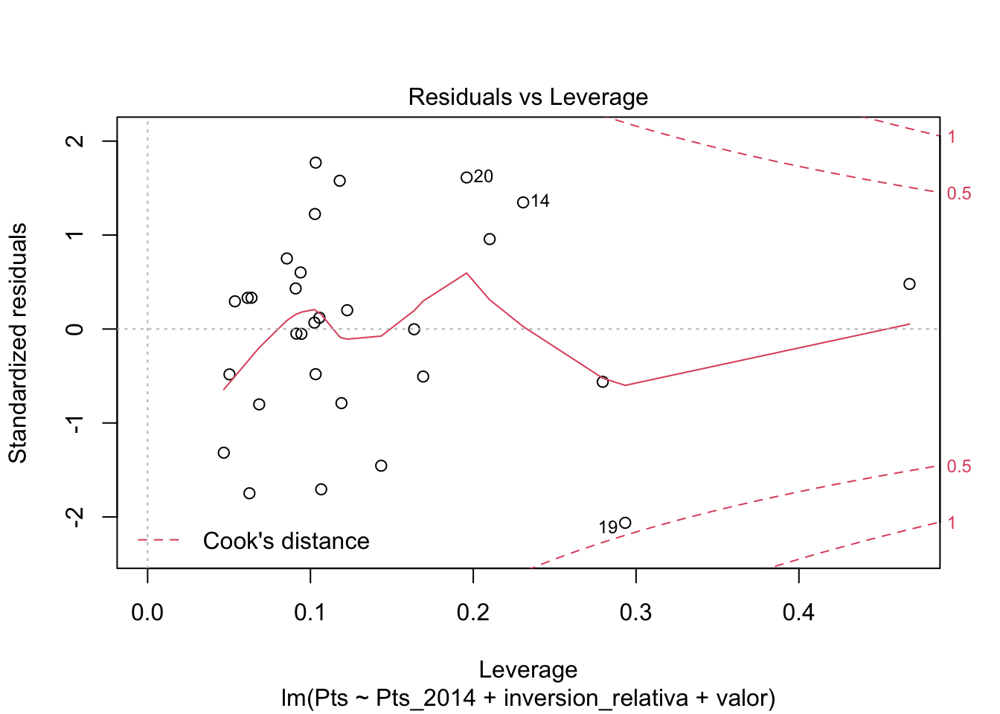
Residuals vs Fitted muestra cierta linealidad de las variables (aunque con una caída, un pozo y después una meseta) y una dispersión bastante homogenea de residuos. No hay quiebres que evidencien un patrón al que debamos prestarle atención. Sí debemos prestar atención al residuo 19, que ya ha sido mencionado, y el 12.
Scale-location muestra la distribución de los reisduos a lo largo del rango de predictores y en el gráfico la distribución parece aleatoria aunque tiende a crecer exponencialmente hacia el final.
Como conclusión de los dos apartados anteriores podemos aceptar el supuesto de homocedasticidad.
Q-Q Plot muestra una distribución normal de los residuos, con desviaciones a considerar en los ya mencionados residuos 12 y 19.
Residuals vs Leverage arroja que ningún valor sobrepasa las lineas de Cook. Otra vez el valor 19 muestra diferencias del resto y deberíamos prestar más atención ya que podría ser una observación influyente y/o anormal.
4.5 Conclusiones
Hasta el momento trabajamos con distintos modelos de regresión y abordamos los residuos de los mismos para intentar entender qué variables pueden ayudarnos a predecir y comprender mejor los desempeños de los equipos de primera división del fútbol argentino en el torneo 2015. Encontramos correlación entre la variable Pts y las variables predictoras Pts_2014, inversion_abs y valor que arrojaron los valores más altos del coeficiente de correlación de Pearson.
Los coeficientes de las regresiones lineales simples indican que la relación entre Pts y valor es la más solida, el R cuadrado ajustado es de 0.359, esto significa que la variable valor explica el 35.9% de la variabilidad de los puntos obtenidos en el torneo 2015, es decir nuestra variable Pts.
La regresión entre Pts y Pts_2014 arrojó un valor de R cuadrado ajustado de 0.3019, mientras que en la regresión entre Pts e inversion_abs el R cuadrado ajustado fue de 0.2589.
En cuanto a regresiones lineales múltiples, en la primera se trabajó con todas las variables predictoras del data set, mientras que en el segundo caso seleccionamos las tres variables de mayor significancia según su p-value: Pts_2014, inversion_relativa y valor. El valor del multiple R-squared fue 0.7028 al trabajar con todas las variables y 0.6139 para el caso en el que solo trabajamos con las seleccionadas. Por otro lado, casi no hubo diferencia en el valor de adjusted R-squared, donde fueron 0.5691 y 0.5694 respectivamente.
La regresión multiple con las variables seleccionadas arrojó un coeficiente de determinación mayor, y que explica que el 56.94% de la variabilidad de la variable Pts.
Al ver los residuos, nos encontramos con que gráficos muestran que en líneas generales estos tienen una distribución aleatoria, que tienden a ser normales y cumplen los principios de linealidad y homocedasticidad. Sí hay valores particulares a los que deberíamos prestar atención, como por ejemplo 19 (en mayor medida), 12, 20 y 30.
Si bien pueden servir como orientación, estos modelos no tienen un caracter predictivo determinante ya que la linealiad no es absoluta y nuestros modelos tampoco. La predicciones pueden ayudarnos a formar un nuevo paradigma de comprensión y predicción aproximado y matemático que vaya más allá de la suposición a la que el deporte acostumbra. Pero, en el fútbol intervienen muchísimos factores que exceden los que conforman nuestro data set y que agotan también la capacidad de estos modelos (simples y múltiples) de regresión lineal.